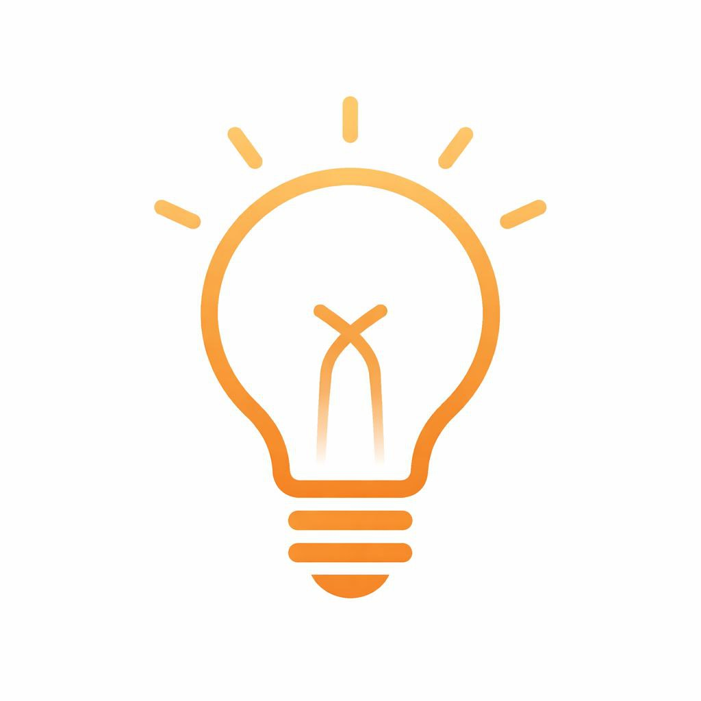

Добро пожаловать! 👋
Здесь вы найдёте алфавит, словарь и мудрые цитаты языка Вакеатэ Мовын.
✨ В словарь добавлены новые выражения.
✧ Алфавит
✧ Словарь
✧ Цитаты великих людей
«почему я жаемна»

Здесь вы найдёте алфавит, словарь и мудрые цитаты языка Вакеатэ Мовын.
✨ В словарь добавлены новые выражения.